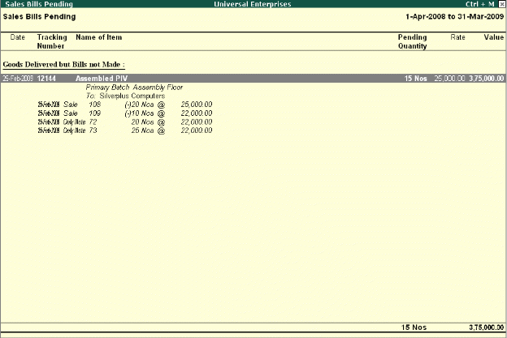

Tracking Inventory
Generally, Invoices are sent along with the goods sold. However, there are certain instances, where the goods are despatched first and then the invoices are sent later or vice versa. In such cases, the stocks balances are not updated simulnateously with the books of accounts. Tally.ERP 9 provides facility to use tracking numbers, wherein you can enter Receipt Note and Delivery Notes with tracking numbers and track the receipt and despatch of goods. Although these vouchers do not affect your accounts they are displayed in the Profit and Loss A/c under the heading Purchase Bills to Come under Purchase Accounts and Sales Bills to Make under Sales Accounts.
Step 1: Enable Tracking Numbers
To enable Tracking Numbers, Go to Gateway of Tally > F11: Inventory Features
# Set Use Tracking Numbers (Delivery/Receipt Notes) to Yes
Step 2: Enter Tracking Numbers
To record Receipt Note with Tracking Numbers, Go to Gateway of Tally > Inventory Info. > Alt+F9 (Receipt Note)
# Select Party's Name from List of Ledger Accounts
# Select Stock Items & specify Qty
# Specify Tracking Number(s)
# Complete voucher by entering all other details
In case of Delivery Note, press Alt+F8 and follow the same steps (as explained above) and recall tracking nos. while raising invoices
Step 3: View Bills Pending Report
To view Sales Bills Pending Report,
Go to Gateway of Tally > Display > Statements of Inventory > Sales Bills Pending

The report shows information on Goods dispatched but sales invoices not generated.